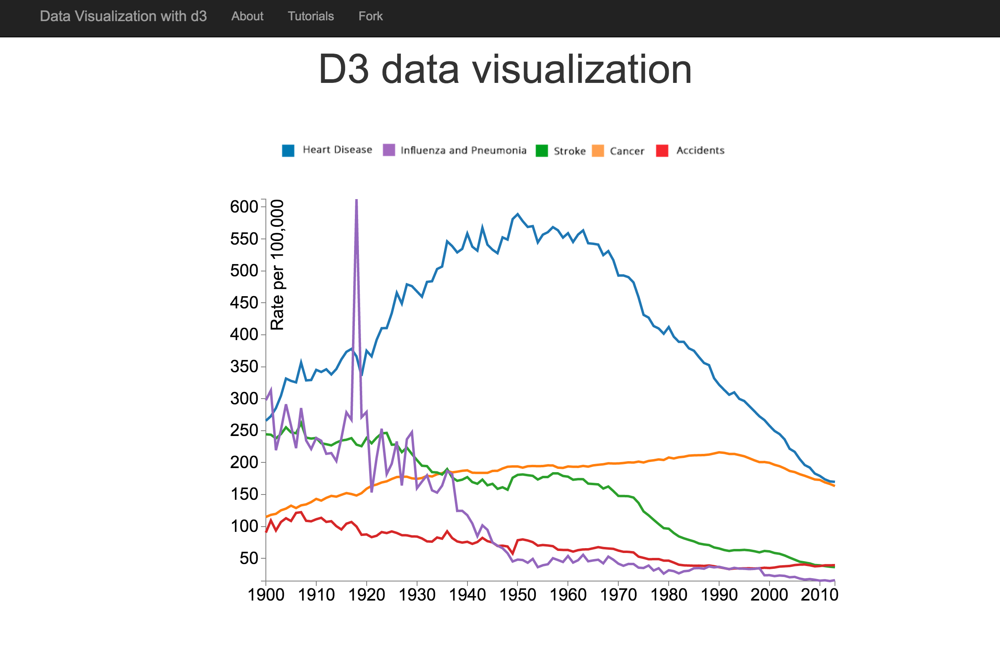

This project was scoped and prepared in two days. I have been interested in learning D3 for a long time, and this was a perfect opportunity to delve into this exciting and powerful JavaScript library. To demonstrate my understanding of D3, I used publicly available CDC datasets, generating two plots, one of which was a multiline chart. I was able to visually represent the change in death rates over time (1900-2013) for five major causes of death (heart disease, accidents, influenza, stroke, cancer).

- Live demo: D3 -Data Driven Documents
- Front end: Github
- CDC datasets CDC